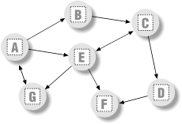

| I l@ve RuBoard |
|
17.5 Graph SearchingMany problems can be represented as a graph, which is a set of states with transitions ("arcs") that lead from one state to another. For example, planning a route for a trip is really a graph search problem in disguise -- the states are places you'd like to visit, and the arcs are the transportation links between them. This section presents simple Python programs that search through a directed, cyclic graph to find the paths between a start state and a goal. Graphs can be more general than trees, because links may point at arbitrary nodes -- even ones already searched (hence the word "cyclic"). The graph used to test searchers in this section is sketched in Figure 17-1. Arrows at the end of arcs indicate valid paths (e.g., A leads to B, E, and G ). The search algorithms will traverse this graph in a depth-first fashion, and trap cycles in order to avoid looping. If you pretend that this is a map, where nodes represent cities, and arcs represent roads, this example will probably seem a bit more meaningful. Figure 17-1. A directed graphThe first thing we need to do is choose a way to represent this graph in a Python script. One approach is to use built-in datatypes and searcher functions. The file in Example 17-15 builds the test graph as a simple dictionary: each state is a dictionary key, with a list of keys of nodes it leads to (i.e., its arcs). This file also defines a function that we'll use to run a few searches in the graph. Example 17-15. PP2E\Dstruct\Classics\gtestfunc.pyGraph = {'A': ['B', 'E', 'G'],
'B': ['C'], # a directed, cyclic graph
'C': ['D', 'E'], # stored as a dictionary
'D': ['F'], # 'key' leads-to [nodes]
'E': ['C', 'F', 'G'],
'F': [ ],
'G': ['A'] }
def tests(searcher): # test searcher function
print searcher('E', 'D', Graph) # find all paths from 'E' to 'D'
for x in ['AG', 'GF', 'BA', 'DA']:
print x, searcher(x[0], x[1], Graph)
Now let's code two modules that implement the actual search algorithms. They are both independent of the graph to be searched (it is passed in as an argument). The first searcher, in Example 17-16, uses recursion to walk through the graph. Example 17-16. PP2E\Dstruct\Classics\gsearch1.py# find all paths from start to goal in graph
def search(start, goal, graph):
solns = []
generate([start], goal, solns, graph) # collect paths
solns.sort( lambda x, y: cmp(len(x), len(y)) ) # sort by path length
return solns
def generate(path, goal, solns, graph):
state = path[-1]
if state == goal: # found goal here
solns.append(path) # change solns in-place
else: # check all arcs here
for arc in graph[state]: # skip cycles on path
if arc not in path:
generate(path + [arc], goal, solns, graph)
if __name__ == '__main__':
import gtestfunc
gtestfunc.tests(search)
The second searcher, in Example 17-17, uses an explicit stack of paths to be expanded using the tuple-tree stack representation we explored earlier in this chapter. Example 17-17. PP2E\Dstruct\Classics\gsearch2.py# use paths stack instead of recursion
def search(start, goal, graph):
solns = generate( ([start], []), goal, graph)
solns.sort( lambda x, y: cmp(len(x), len(y)) )
return solns
def generate(paths, goal, graph): # returns solns list
solns = [] # use a tuple-stack
while paths:
front, paths = paths # pop the top path
state = front[-1]
if state == goal:
solns.append(front) # goal on this path
else:
for arc in graph[state]: # add all extensions
if arc not in front:
paths = (front + [arc]), paths
return solns
if __name__ == '__main__':
import gtestfunc
gtestfunc.tests(search)
Both searchers keep track of nodes visited along a path, to avoid cycles. If an extension is already on the current path, it is a loop. The resulting solutions list is sorted by increasing lengths using the list sort method and the built-in cmp comparison function. To test the searcher modules, simply run them; their self-test code calls the canned search test in the gtestfunc module: C:\...\PP2E\Dstruct\Classics>python gsearch1.py
[['E', 'C', 'D'], ['E', 'G', 'A', 'B', 'C', 'D']]
AG [['A', 'G'], ['A', 'E', 'G'], ['A', 'B', 'C', 'E', 'G']]
GF [['G', 'A', 'E', 'F'], ['G', 'A', 'B', 'C', 'D', 'F'],
['G', 'A', 'B', 'C', 'E', 'F'], ['G', 'A', 'E', 'C', 'D', 'F']]
BA [['B', 'C', 'E', 'G', 'A']]
DA []
C:\...\PP2E\Dstruct\Classics>python gsearch2.py
[['E', 'C', 'D'], ['E', 'G', 'A', 'B', 'C', 'D']]
AG [['A', 'G'], ['A', 'E', 'G'], ['A', 'B', 'C', 'E', 'G']]
GF [['G', 'A', 'E', 'F'], ['G', 'A', 'E', 'C', 'D', 'F'],
['G', 'A', 'B', 'C', 'E', 'F'], ['G', 'A', 'B', 'C', 'D', 'F']]
BA [['B', 'C', 'E', 'G', 'A']]
DA []
This output shows lists of possible paths through the test graph; I added two line breaks to make it more readable. Notice that both searchers find the same paths in all tests, but the order in which they find those solutions may differ. The gsearch2 order depends on how and when extensions are added to its path's stack. 17.5.1 Moving Graphs to ClassesUsing dictionaries to represent graphs is efficient: connected nodes are located by a fast hashing operation. But depending on the application, other representations might make more sense. For instance, classes can be used to model nodes in a network, too, much like the binary tree example earlier. As classes, nodes may contain content useful for more sophisticated searches. To illustrate, Example 17-18 shows an alternative coding for our graph searcher; its algorithm is closest to gsearch1. Example 17-18. PP2E\Dstruct\Classics\graph.py# build graph with objects that know how to search
class Graph:
def __init__(self, label, extra=None):
self.name = label # nodes=inst objects
self.data = extra # graph=linked objs
self.arcs = []
def __repr__(self):
return self.name
def search(self, goal):
Graph.solns = []
self.generate([self], goal)
Graph.solns.sort(lambda x,y: cmp(len(x), len(y)))
return Graph.solns
def generate(self, path, goal):
if self == goal: # class == tests addr
Graph.solns.append(path) # or self.solns: same
else:
for arc in self.arcs:
if arc not in path:
arc.generate(path + [arc], goal)
if __name__ == '__main__':
import gtestobj1
gtestobj1.tests(Graph)
In this version, graphs are represented as a network of embedded class instance objects. Each node in the graph contains a list of the node objects it leads to (arcs), which it knows how to search. The generate method walks through the objects in the graph. But this time, links are directly available on each node's arcs list; there is no need to index (or pass) a dictionary to find linked objects. To test, the module in Example 17-19 builds the test graph again, this time using linked instances of the Graph class. Notice the use of exec in the self-test code: it executes dynamically constructed strings to do the work of seven assignment statements (A=Graph('A'), B=Graph('B'), etc.). Example 17-19. PP2E\Dstruct\Classics\gtestobj1.pydef tests(Graph):
for name in "ABCDEFG": # make objects first
exec "%s = Graph('%s')" % (name, name) # label=variable-name
A.arcs = [B, E, G]
B.arcs = [C] # now configure their links:
C.arcs = [D, E] # embedded class-instance list
D.arcs = [F]
E.arcs = [C, F, G]
G.arcs = [A]
A.search(G)
for (start, stop) in [(E,D), (A,G), (G,F), (B,A), (D,A)]:
print start.search(stop)
You run this test by running the graph module to pass in a graph class, like this: C:\...\PP2E\Dstruct\Classics>python graph.py [[E, C, D], [E, G, A, B, C, D]] [[A, G], [A, E, G], [A, B, C, E, G]] [[G, A, E, F], [G, A, B, C, D, F], [G, A, B, C, E, F], [G, A, E, C, D, F]] [[B, C, E, G, A]] [] The results are the same as for the functions, but node name labels are not quoted: nodes on path lists here are Graph instances, and this class's __repr__ scheme suppresses quotes. Example 17-20 is one last graph test before we move on; sketch the nodes and arcs on paper if you have more trouble following the paths than Python. Example 17-20. PP2E\Dstruct\Classics\gtestobj2.pyfrom graph import Graph
S = Graph('s')
P = Graph('p') # a graph of spam
A = Graph('a') # make node objects
M = Graph('m')
S.arcs = [P, M] # S leads to P and M
P.arcs = [S, M, A] # arcs: embedded objects
A.arcs = [M]
print S.search(M) # find all paths from S to M
This test finds three paths in its graph between nodes S and M. If you'd like to see more Python graph code, check out the files in directory MoreGraphs on the CD (see http://examples.oreilly.com/python2). These are roughly the same as the ones listed here, but add user interaction as each solution is found. In addition, we've really only scratched the surface of this domain here; see other books for additional topics (e.g., breadth- and best-first search): C:\...\PP2E\Dstruct\Classics>python gtestobj2.py [[s, m], [s, p, m], [s, p, a, m]] |
| I l@ve RuBoard |
|